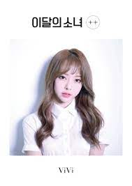

ViVi

A quinta membro do grupo a ser revelada com sua música de estreia: Everyday I Love You.
Aqui vai algumas informações sobre ela.
- Nome de nascimento: Wong kahei (黃 珈 熙).
- Stage Name: ViVi (비비).
- Nome coreano: Hwang A-ra (황 아라).
- Nascimento: 9 de dezembro de 1996.
- Nacionalidade: Chinesa.
- Mês: Garota de Abril (apresentada em abril de 2017).
- Animal: Cervo.
- Cor: Rosa pastel.
- Posição do grupo: Vocalista, visual.
- Signo do zodíaco: Sagitário.
- Sub-Unit: LООПΔ 1/3.
Fatos da ViVi:
- Ela nasceu em Hong Kong.
- Ela tem uma irmã mais nova e um irmão mais novo.
- Ela cantou uma música de um cantor taiwanês chamado Jolin Tsai na audição.
- Os apelidos de Vivi são BB Cream e Pya Pya.
- Vivi é um dos membros mais flexíveis.
- Ela é a mais velha.
- A comida coreana que Vivi gosta é de frango.
- Vivi pratica muito seu coreano. - Haseul é a que mais ajuda Vivi a aprender o coreano.
- Vivi consegue fazer rap, mas ela só pode faz rap em chinês.
- Ela decidiu se tornar uma cantora de K-pop depois de assistir vídeos de música do Big Bang e 2NE1.
- Sua modelo é Hyuna.
Essas foram algumas curiosidades sobre a quinta membro a ser revelada do loona. Ela já fez seu re-debut (segunda estreia) como membro do Loossemble, que debutou mês pessado junto com outras 4 meninas: Hyunjin, Yeojin, Gowon e Hyeju.
Confira abaixo as redes sociais de ViVi.
Instagram
Canal oficial do grupo
@Loossemble_official